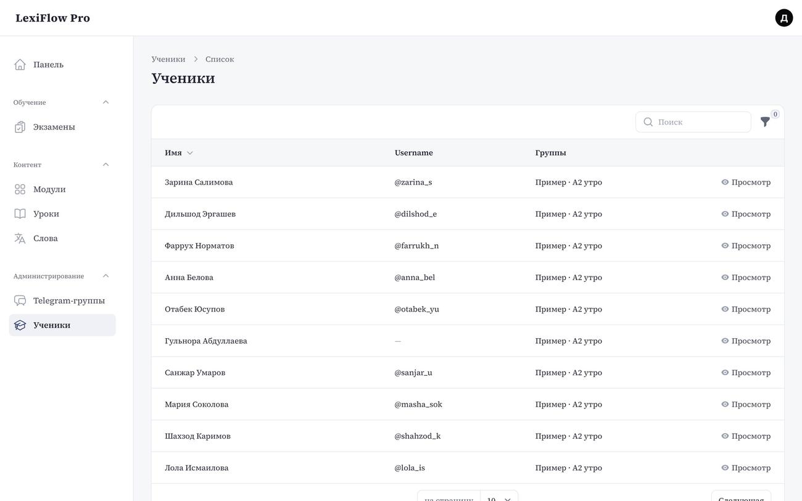
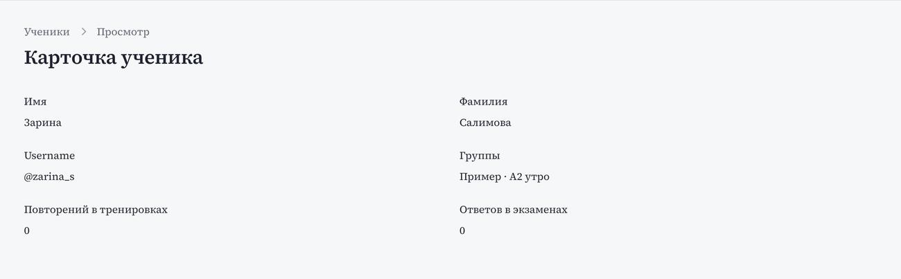
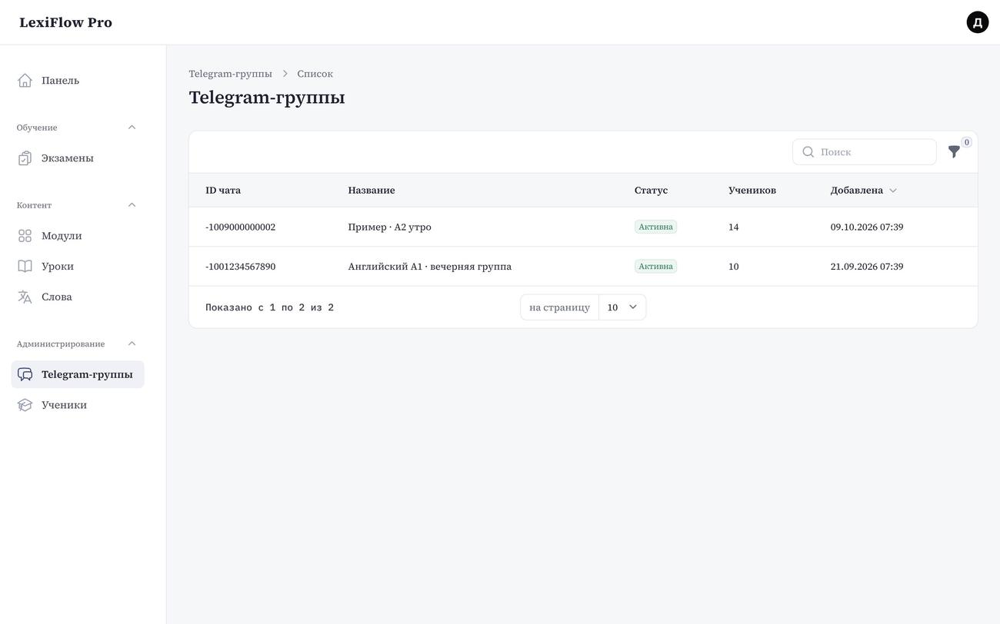

Учитель с ролью «Учитель» входит в /admin по почте и паролю, без кода из приложения. Он работает только со своими группами — теми, где он указан в поле «Учителя» у Telegram-группы. Ничего изменить учитель здесь не может: панель для него — справочник. Если учитель работает в учебном центре, его основной инструмент — кабинет /org.
| Раздел | Что доступно учителю |
|---|---|
| Панель | «Всего учеников», «Экзаменов за 30 дней», «Активность тренировок за 30 дней», «Лучшие ученики за 30 дней», «Самые трудные слова за 30 дней» — всё только по своим группам и только групповые занятия (глава «Главная панель») |
| Экзамены | групповые экзамены своих групп и их результаты по ученикам и словам |
| Модули, Уроки, Слова | списки для справки: какие номера модулей и уроков вводить в командах бота, какие слова в уроке. Открыть и править запись нельзя |
| Telegram-группы | список своих групп, без правки |
| Ученики | активные участники своих групп: имя, username, группы; в карточке — повторения в групповых тренировках и ответы в экзаменах. Telegram ID, тариф, подписки и события учитель не видит; действий нет |



Если учитель откроет по прямой ссылке раздел, который ему не положен (например, «Курсы» или «Подписки»), панель покажет пустую страницу с надписью «403 Forbidden» (доступ запрещён). Это не сбой: вернитесь назад кнопкой браузера.
| Просьба | Что сделать |
|---|---|
| «Не вижу свою группу или учеников» | добавить учителя в поле «Учителя» группы (глава «Telegram-группы»); ученик виден, только пока он активный участник группы |
| «Бот не реагирует на мои команды» | проверить статус группы, поле «Учителя», Telegram ID и флажок «Активен» учителя |
| «Нужно поменять курс группы» | сменить «Курс» в карточке группы — это может только администратор |
| «Забыл пароль» | задать новый пароль в разделе «Сотрудники» |